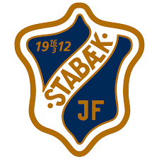

Stabæk fotball er en klubb i Eliteserien. Klubben har både vunnet ligaen og cupen. Men har de siste årene slitet med økonomi og dette har påvirket resultatene.

Stabæk vant sist ligaen i 2008. Med profiler som Alanzinho, Nanskog og Gunnarson.
| Seier | Uavgjort | Tap |
|---|---|---|
| 18 | 7 | 25 |